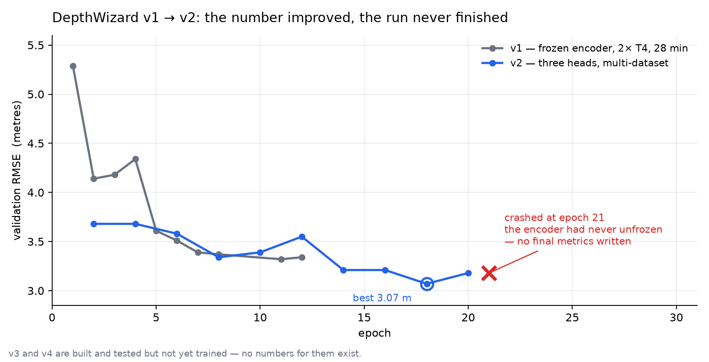
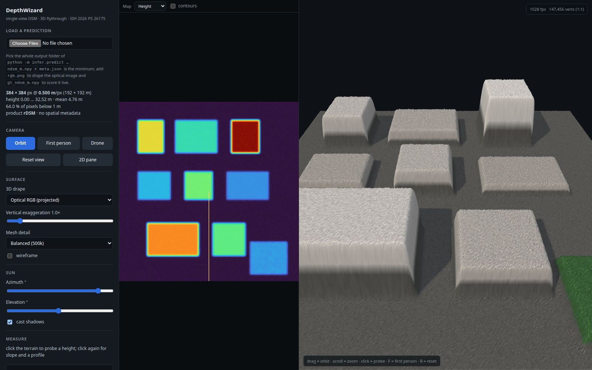

Building DepthWizard for Smart India Hackathon 2026. This post is a living log — I'll keep adding to it as the project moves toward the December finals.
You are handed one aerial photograph. No stereo pair, no LiDAR sweep, no radar. A flat RGB image, taken straight down. The question is: how tall is everything in it?
That question is worth answering because the usual ways of answering it are expensive. Digital Surface Models — the height-per-pixel rasters urban planners and disaster response teams work from — normally come from stereo imaging, airborne LiDAR or interferometric radar, all of which need specific sensors, repeat passes and budgets. A single optical image is the cheapest thing a satellite produces.
This is Smart India Hackathon 2026 problem statement 26175, posed by ISRO's Space Applications Centre. It is scored 50% on elevation accuracy and 50% on the rendering and user experience of a 3D flythrough built from that elevation — two halves, equally weighted, which most teams will answer by spending 90% of their effort on the first one.
What follows is the actual development arc: four versions in about two weeks, three of them rewrites caused by something we measured rather than something we imagined.
The problem statement suggests an approach in its own framing: take a foundation monocular depth model, get relative depth out of it, then rescale that to metres using a coarse public elevation source like SRTM.
We argued that this framing is wrong, and building against it would have cost us the accuracy half of the score.
In a nadir remote-sensing image, the ground sample distance — how many metres one pixel covers — is known. There is no scale ambiguity to resolve. Height in metres is directly learnable. Any team that regresses metric height end-to-end beats a team that regresses relative depth and then fits a global scale factor to it.
Two decisions followed from that. First, decompose the output honestly:
absolute elevation = coarse terrain from a public DEM + structure height predicted from RGB
Terrain comes from geometry and public data. Structure height — buildings, canopy, bridges — is where the machine learning lives. The "convert relative depth to metres" step simply disappears.
Second, the problem statement complains that foundation depth models are trained on natural, eye-level imagery and therefore suffer a domain gap on top-down satellite views. Rather than fine-tune our way around that gap, we removed it at the root: DINOv3 ViT-L/16, pretrained on 493 million satellite images — a satellite-native encoder, frozen, with a light decoder on top. If the gap is between the pretraining data and the task, change the pretraining data.
The first version did the simplest measurable thing: frozen DINOv3 encoder, a DPT decoder, one head regressing height in metres. Eleven million trainable parameters out of three hundred million, on two Tesla T4s in a free Kaggle session. Twelve epochs, twenty-eight minutes wall clock, 3.32 m validation RMSE on the GAMUS dataset.
That number wasn't good. It was real, which mattered more — every later decision got measured against it instead of against an intuition.
v2 was the ambitious one: three prediction heads instead of one, a synthetic-data pretraining stage, multiple datasets, resolution canonicalisation, test-time augmentation, and a plan to unfreeze the last blocks of the encoder late in training. A much bigger GPU.
Best validation RMSE hit 3.07 m at epoch 18 — a 7.6% improvement — and was still dropping.
Then it crashed at epoch 21 of 30, with this:
AttributeError: cannot locate transformer blocks on the encoderThe unfreezing code looked for the transformer blocks at
model.layers or model.blocks. The actual
layout in the library was model.model.layer. So the encoder
had never unfrozen at any point in the run. Thirty
epochs of an architecture that, functionally, was v1's.
And because the process died before the final evaluation stage, none of the final metrics were ever written to disk. The test-time augmentation our pitch deck described as "free accuracy" had, at that moment, never once been measured.

v1 and v2 validation RMSE. The improvement was real; the run that produced it never finished.That crash is the turning point of this project — not because of the bug, but because of what we did next.
Instead of writing v3, we spent the time working out what v2's 3.07 m actually meant. Three findings, none of which we would have guessed:
41% of every training pixel was a lie. The scale augmentation resampled each tile to a random resolution and then cropped it to 512 pixels — which, for tiles that couldn't fill the crop, meant padding with black. That padding was labelled 0 metres and marked as valid data. We measured it: 76.5% of augmented samples contained padding, and 49% were more than half padding. The loss function had been actively teaching the network that black means ground level.
The global average hid the error that mattered. Split the validation set by height and the 3.07 m dissolves: flat ground and roads were accurate to 0.48 m, while structures above 15 m were under-predicted by 5.3 m on average. Balanced across height strata, the real error was 4.19 m. A single global RMSE is a summary statistic that can hide exactly the failure a judge will look for.
The model did not survive a change of sensor. Run it on imagery from a different satellite at nearly identical resolution and 28% of pixels came out below 1 m, against 56% in-domain. It put roughly four metres of height onto flat ground. The flythrough render was a crumpled mountain range where there should have been flat ground and discrete buildings. v2 had no photometric augmentation and no radiometric normalisation at all — and the final evaluation will use ISRO's own Cartosat imagery, with its own radiometry.
There was one more finding, and it was about us. A per-land-cover accuracy table had been in our slide deck since v1. Counting the pixels showed the class ids it assumed were impossible: it implied bridges were 16% of an aerial scene and bare ground was 0.1%. The table wasn't wrong by a little. It had never been checked. We stopped quoting it, and later versions report neutral class labels plus a measured histogram, so the mapping gets fixed from evidence rather than from an assumption someone copied forward three times.
v3 was a rewrite where each change points at one of the numbers above. Crop in source pixels before resampling, so padding cannot exist. Find the transformer blocks structurally — the module list whose length equals the layer count — so the encoder genuinely unfreezes. Per-scene contrast stretching and photometric jitter, for the cross-sensor failure. Inverse-frequency loss weighting by height stratum, for the tall-structure bias.
v4 turned that pipeline into a deliverable — and caught one more bug of the same family, the best one in the project.
Adding a public DEM to the predicted structure height was double-counting every building. Copernicus GLO-30 and SRTM are surface models: they already include the buildings. So a 30 m tower on 12 m of terrain came out at about 165 m instead of 135 m. The dangerous part is that it still looked like a perfectly plausible elevation raster. Nothing about the output said it was wrong.
The fix is to estimate the bare-earth terrain first, fitting a smooth surface only through pixels that are ground — required to be both semantically ground and low in the predicted height map, so that the unverified class ids can't poison the fit — and then add structure height to that. On a synthetic scene with known geometry: 134.4 m recovered against a true 135.0 m, terrain to within 0.4 m.
Half the score is rendering and user experience, so half the work had to be.
The viewer is plain JavaScript and Three.js with no build step — you open the HTML file, and that is the entire install. Dual pane: a map with colormap, hillshade, contours and signed-error overlays, and a flythrough with orbit, first-person WASD and a cinematic drone path, with adjustable sun angle and vertical exaggeration. You can click to probe a height, pick two points for a slope, draw an elevation profile, and compute RMSE against a reference raster in the browser — so a number in the report is a number the demo reproduces live.

The viewer running on its synthetic test scene — blocks of exactly known height, so probing a rooftop must read back the number that was put there. No trained model is involved in this image.Behind it, a FastAPI service that writes plain directories in the layout the viewer already reads: no database, no queue, nothing to lose when a process dies mid-demo. An ONNX export verified against the PyTorch checkpoint to within 0.05 m, so it runs with no GPU and no model download. And over a hundred offline tests needing neither GPU nor network — including one that pins both the original unfreezing failure and its fix.
Last updated: 13 September 2026.
v4 is built, tested and verified end-to-end on CPU — a real GeoTIFF round trip that preserves its coordinate system pixel-identically, the service probed for path traversal, the viewer driven in a headless browser against a real prediction directory. It has not been trained yet. The accuracy numbers above are v1's and v2's; v4's are still to be earned. The finals are in December, and I'll add each run's results here as they land.
DepthWizard is a team project for SIH 2026. Code: github.com/AbhayKale332/DepthWizard